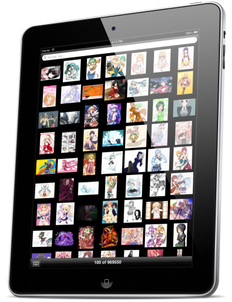

Double the screen. Double the fun.
Complete support for iPad.

Take it with you. Portrait or landscape.
There is no proper way to hold your iPhone, there are many ways. So why should we limit you to just one?
Show your favourites to your friends. Sharing in 1-2-3.
With the new iOS 6 UIActivity API, we were able to implement virtually every possible way of using your findings. You can download it to iTunes file sharing to grab from your computer later, too.